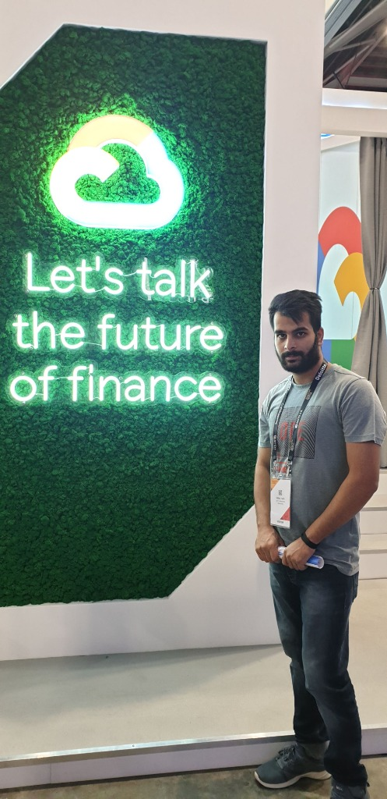
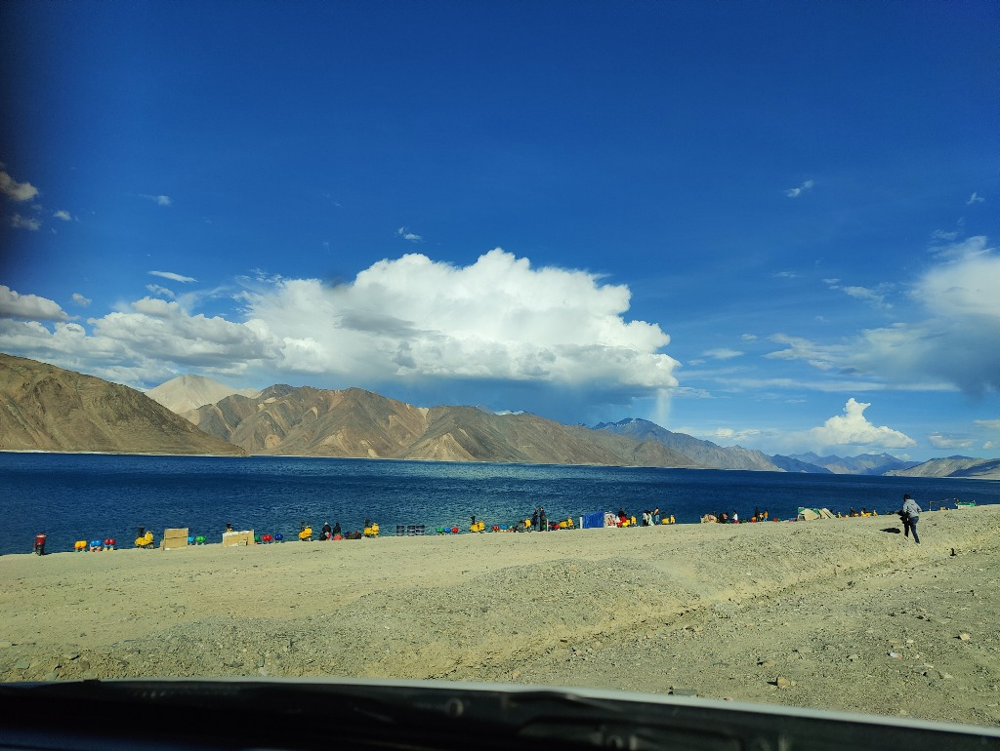
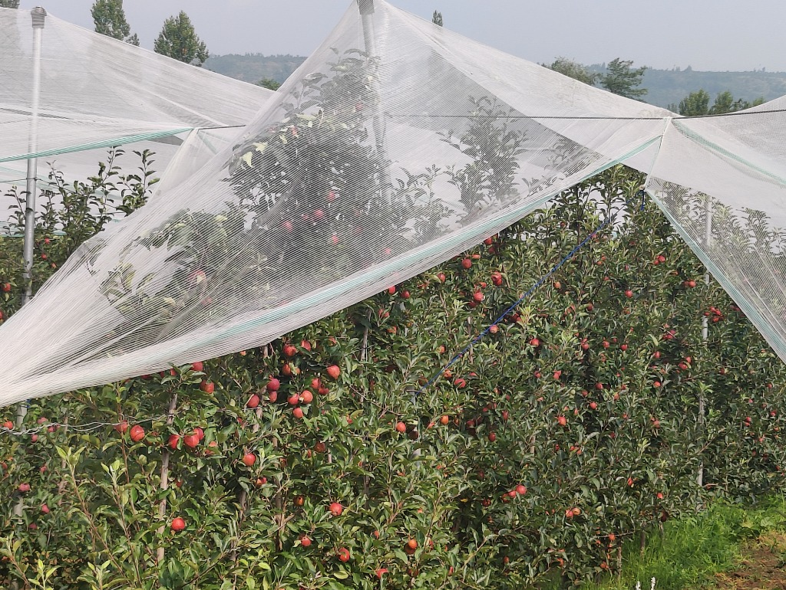
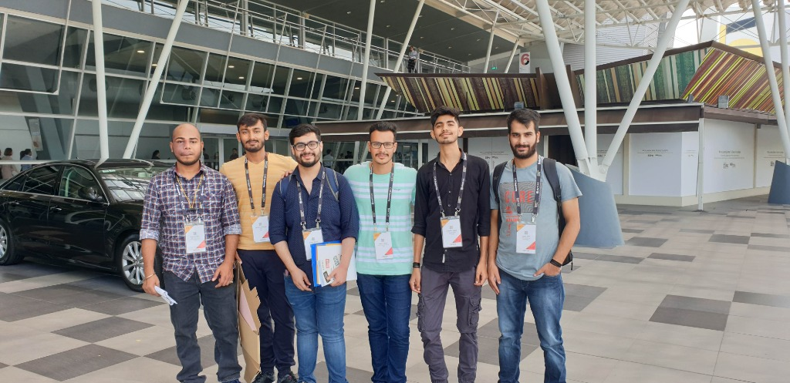

Hello, I'm
Data Science grad student at Rowan University with previous analytics experience at Accenture. I like working with data and building things that are useful.

📍 Google Cloud ConferenceAbout
I grew up in a small village in Kashmir, India — surrounded by mountains, apple orchards, and Dal Lake. Moved to Delhi for my B.Tech in Computer Science at Amity University, where I first got into programming and data.
After graduating, I worked at DXC Technology and then Accenture, where I spent about 2.5 years building analytics dashboards, writing SQL pipelines, and helping teams make sense of their data.
Now I'm in New Jersey, pursuing my MS in Data Science at Rowan University. In grad school I've been diving into machine learning, deep learning, and bigger data problems. I'm looking for my first full-time data science role after graduation.

Pangong Tso, Ladakh — 14,000 ft
Home — KashmirExperience
Worked on analytics dashboards in Power BI and Tableau for enterprise clients. Wrote SQL and Python scripts for data pipelines integrating Adobe & Google Analytics. Helped automate weekly reporting workflows and did customer segmentation analysis.
Built backend features in C#/.NET with SQL Server databases. Maintained REST APIs for internal data integration. Worked in Agile sprints with code reviews and testing.
Coursework in Machine Learning, Deep Learning, Big Data Systems, Statistical Modeling. Building applied ML projects — image classifiers, anomaly detection, IoT monitoring.
Foundation in algorithms, data structures, databases, and software engineering. Research on cloud security for 5G/IoT environments.
Projects
Fine-tuned a pre-trained ViT model on ImageNet100. Used Bayesian hyperparameter optimization and trained on our university's HPC cluster.
Built a VQ-VAE autoencoder for unsupervised anomaly detection. Uses reconstruction error as the anomaly score — no labeled defect data needed.
Power BI dashboard I built at Accenture. Integrated Adobe & Google Analytics data for real-time views into customer behavior and campaign performance.
Dual-database architecture with InfluxDB for time-series data and SQL for metadata. Statistical anomaly detection with an interactive monitoring dashboard.
Skills
Journey
Through my lens — mountains, conferences, and the places that shaped me.

Conference with team